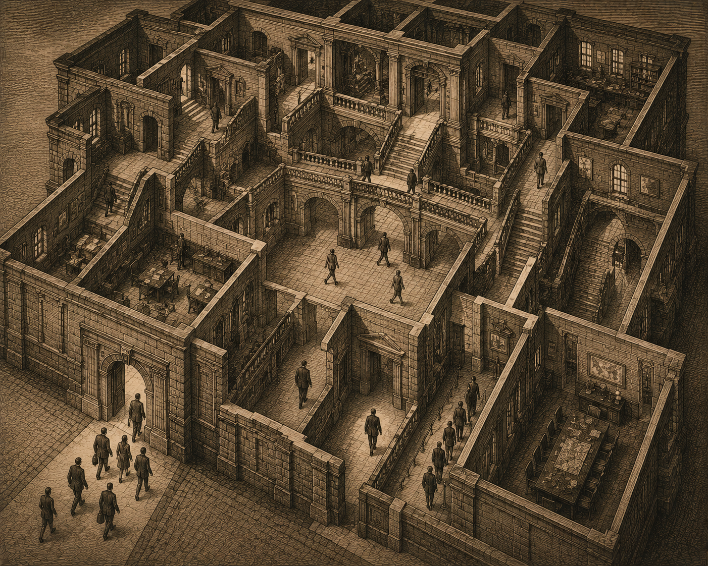
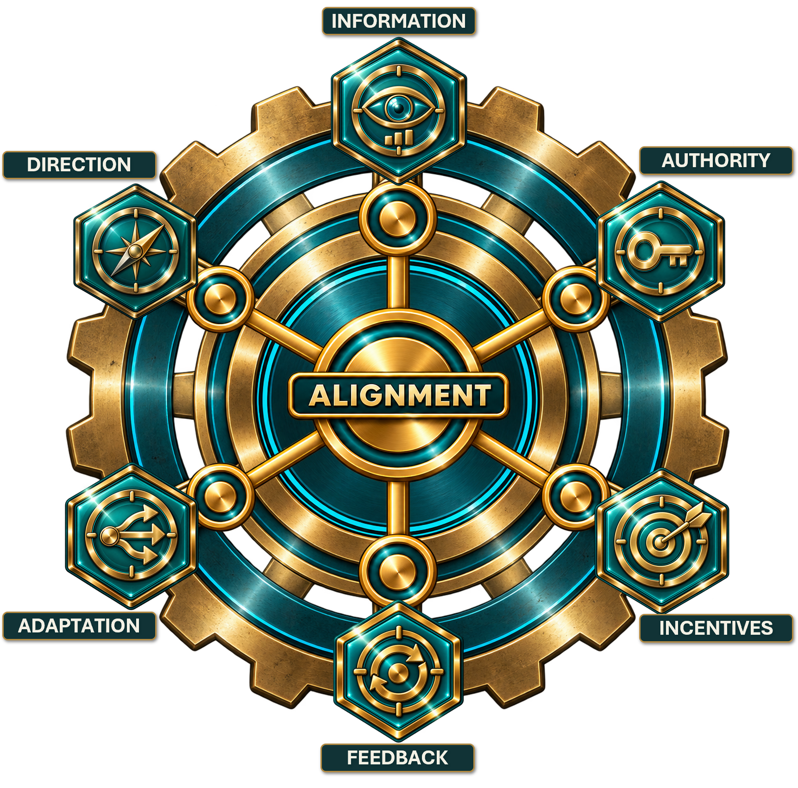
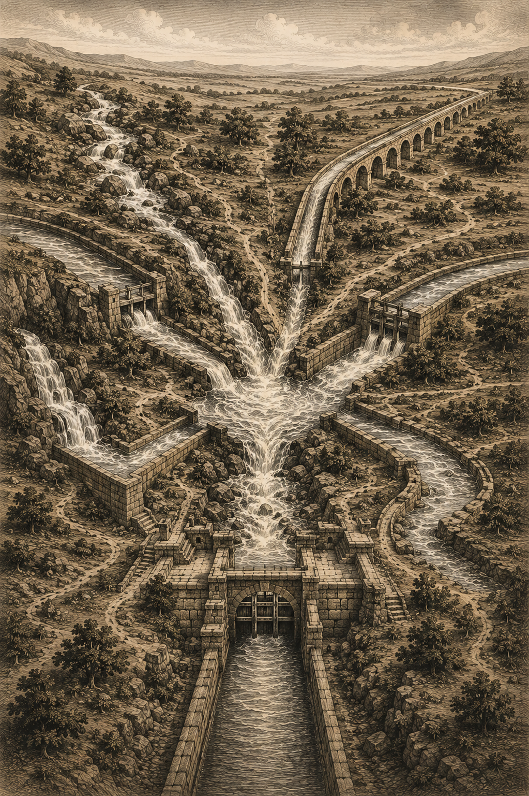
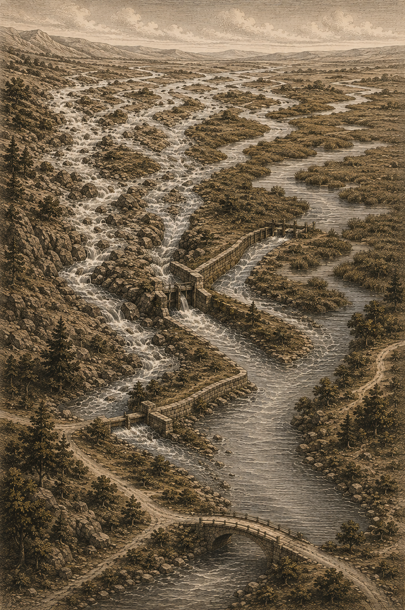
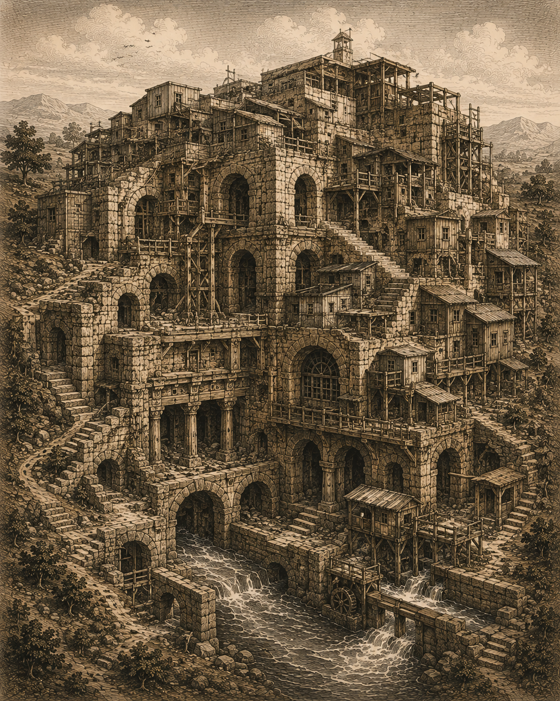
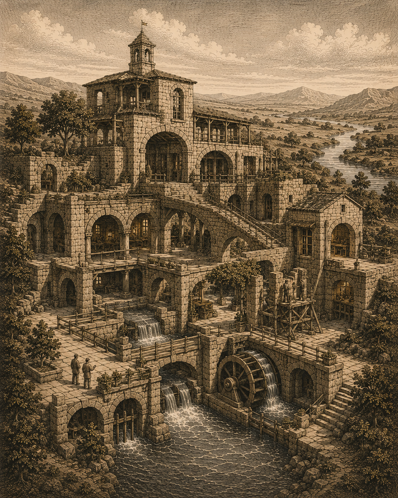

Decisions Begin Before Someone Decides
A capable manager can receive incomplete information. An employee can recognize a problem and lack the authority to correct it. A department can make a locally rational decision that damages the larger system. A metric can quietly reward the wrong behavior.
These are not always failures of individual judgment. They are often consequences of the environment in which judgment operates. Processes, policies, controls, systems, reporting relationships, incentives, expectations, and workarounds accumulate over time until yesterday’s reasonable decisions become today’s organization.
Decision Architecture makes that hidden environment visible. Every organization already has a decision architecture. The question is whether it was designed deliberately—or merely inherited.
The Architecture of Better Decisions


The elements matter. Their fit matters more.
Decision Architecture examines not only each element but the relationships between them.
Good Information has limited value without Authority to act. Authority has limited value when Incentives discourage its use. Feedback has limited value when nobody can Adapt what produced the result.

Where the Book Goes Next
A selective map of additional territory developed through the book.
The Invisible Architecture
See how the organization shapes choices before a decision-maker ever reaches the moment of decision.
Local Rationality & Workarounds
Understand why reasonable people can produce unreasonable system results—and why coping with the system can become the system.
The Six Elements
Examine Direction, Information, Authority, Incentives, Feedback, and Adaptation as one connected decision environment.
Why Organizations Drift
Recognize organizational debt, complexity, normalized friction, and memory that preserves architecture after its original reason disappears.
Redesigning the Architecture
Design for flow, visibility, ownership, learning, controlled adaptation, weak signals, better defaults, and cleaner handoffs.
The Self-Correcting Organization
Build an organization in which reality can change the system rather than requiring leaders to rediscover the same mismatch repeatedly.

Useful Solutions Can Become Inherited Architecture
Organizations accumulate workarounds, controls, meetings, systems, approvals, and exceptions one reasonable decision at a time. As the original circumstances fade, the architecture can remain.
Decision Architecture examines organizational debt, complexity, normalized friction, and organizational memory so leaders can distinguish what still creates value from what the organization has simply learned to carry.

Create Better Conditions for Better Decisions
The objective is not redesign for its own sake. Diagnose the decision environment, understand how useful solutions drift into inherited architecture, redesign the mismatches, and use feedback and adaptation to create an organization capable of correcting itself as conditions change.
The test is practical: does the redesigned environment make sound judgment easier to exercise where the work actually happens?
Put the ideas to work.
These are the kinds of questions the book is designed to make easier to ask—and harder to ignore.
- What decision are we actually trying to improve?
- What could the decision-maker see at the moment of choice?
- Where are Information and Authority separated?
- Where do Incentives conflict with Direction?
- What recurring friction is evidence of an architectural mismatch?
- When Feedback reveals reality, can the organization actually Adapt?
Who This Book Is For
Executives, functional leaders, managers, organizational designers, operations and improvement professionals, and anyone confronting recurring problems that survive repeated attempts to fix them. The book shifts attention from blaming individual decisions to examining the conditions that repeatedly make those decisions reasonable.
Decision Architecture
Read the book or use the companion resources to put its ideas to work.